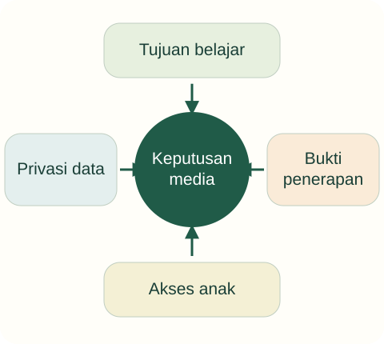
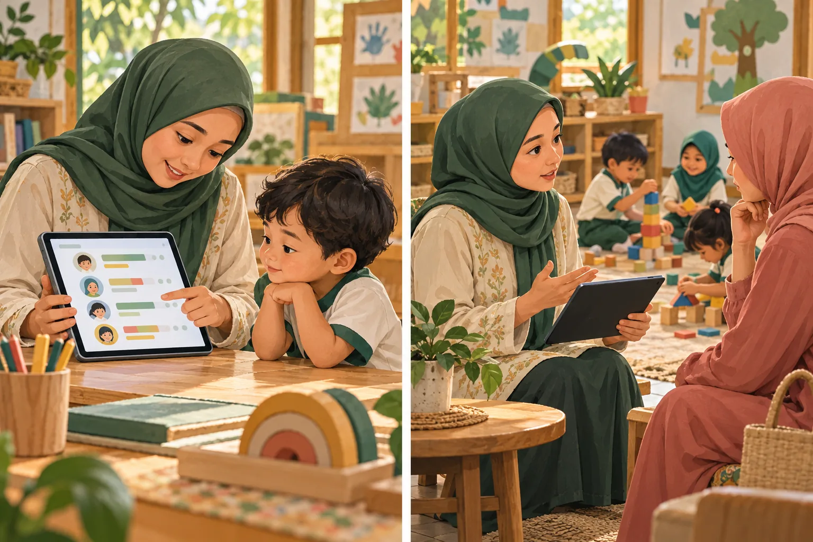

Tujuan pembelajaran
- Menilai cakupan klaim dan pengukuran
- Menentukan tujuan dan bukti penggunaan media
- Menjelaskan pertimbangan privasi dokumentasi
Dari skor ke klaim
Skor menggambarkan kinerja pada aturan dan tugas tertentu. Kenaikan dapat berkaitan dengan penguasaan pola, latihan mengoperasikan aplikasi, atau hafalan urutan. Untuk menilai klaim, identifikasi kemampuan yang diukur, pembanding, serta konteks pengukuran. Jika tujuan guru adalah mengenali pola berulang, ia dapat meminta anak melanjutkan pola dengan benda berbeda untuk mencari bukti penerapan. Klaim tentang kecerdasan umum membutuhkan ukuran dan rancangan penelitian yang sesuai dengan cakupannya.
Media dinilai dari pengalaman belajar
Hirsh-Pasek et al. (2015) mengusulkan kerangka untuk menilai aplikasi berdasarkan kesempatan belajar aktif, keterlibatan, kebermaknaan, serta interaksi sosial yang berpijak pada tujuan. Dalam kegiatan pola, guru dapat memilih media yang memungkinkan anak memprediksi elemen selanjutnya, menjelaskan alasan, dan membandingkan susunan bersama teman. Kerangka ini memberi kriteria untuk memeriksa rancangan kegiatan. Manfaat media spesifik tetap memerlukan bukti.
Akses dan pengalaman yang digantikan
Tablet bersama dapat memberi kesempatan berdiskusi jika setiap anak memiliki cara menyumbang ide. Bila gilirannya terlalu singkat, anak mungkin hanya menekan jawaban. Pertimbangkan ketersediaan perangkat, bahasa, kebutuhan akses, dan waktu yang diambil dari pengalaman langsung. Jika balok dan kancing lebih sesuai untuk mencoba pola, pilih benda tersebut atau gunakan sebagai kegiatan pendamping. Keputusan dimulai dari tujuan dan keadaan satuan.
Privasi sebagai bagian keputusan pendidikan
UU No. 27 Tahun 2022 Pasal 25 mengatur pemrosesan data pribadi anak secara khusus dan mensyaratkan persetujuan orang tua dan/atau wali sesuai ketentuan. Pasal 27 dan 28 mengarahkan pemrosesan terbatas, spesifik, transparan, dan sesuai tujuan. Dalam komunikasi perkembangan, guru dapat membahas pengamatan secara privat, membatasi informasi yang dikumpulkan, dan mengikuti prosedur satuan. Untuk latihan kuliah, gunakan contoh sintetis tanpa identitas anak.
Diagram konsep

Apa yang dapat disimpulkan dari skor aplikasi belajar?

Aplikasi menjanjikan peningkatan kecerdasan melalui permainan pola. Guru melihat skor naik setelah beberapa putaran. Keluarga bertanya apakah skor itu bisa dibagikan untuk membandingkan kemajuan anak.
- Informasi apa yang tampak pada layar?
- Apa perbedaan pengguna informasi di kedua adegan?
Pembahasan kasus
Beri tugas pola serupa dengan benda baru, lalu minta anak menunjukkan caranya. Sampaikan hasil kepada keluarga sebagai catatan tentang strategi pada tugas tertentu. Tinjau dasar, tujuan, dan akses sebelum data individual ditangani.
Buka contoh penalaran setelah mencoba
Usulkan pemeriksaan sederhana atas pemahaman pola di luar aplikasi.
Gunakan pola sejenis dengan balok berbeda. Minta anak melanjutkan susunan dan menunjukkan bagian yang berulang.
Latihan terbimbing
Ubah klaim “aplikasi membuat semua anak lebih cerdas” menjadi pertanyaan yang bisa diuji pada satu kemampuan. Tentukan tugas pembanding dan bukti penerapan.
Latihan mandiri
Bandingkan satu kegiatan digital dengan alternatif benda nyata untuk tujuan yang sama. Jelaskan peran guru, akses, bukti, dan cara menjaga data anak.
Lihat pembahasan
kinerjanya membaik pada permainan itu dan penyebab atau penerapannya perlu diperiksa
Data yang diberikan mendukung perubahan kinerja pada tugas yang diulang. Inferensi penyebab dan transfer memerlukan bukti tambahan.
Refleksi calon pendidik
Jika perangkat dihilangkan, bagian mana dari rancangan saya masih memberi pengalaman belajar yang sama?
Catatan hanya disimpan di peramban ini. Tidak dikirim kepada dosen.
Referensi dan bacaan pendamping
- Hirsh-Pasek, K., Zosh, J. M., Golinkoff, R. M., Gray, J. H., Robb, M. B., & Kaufman, J. (2015). Putting education in “educational” apps: Lessons from the science of learning. Psychological Science in the Public Interest, 16(1), 3–34.Kerangka untuk menilai pengalaman belajar yang dirancang melalui aplikasi.
- Republik Indonesia. (2022). Undang-Undang Nomor 27 Tahun 2022 tentang Pelindungan Data Pribadi.Pasal 25, 27, dan 28 mengenai data anak serta tujuan pemrosesan.